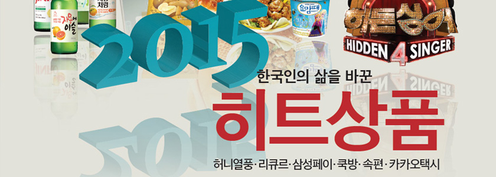
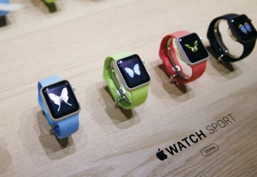
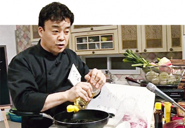

12-07 03:00 편집

2015 한국인의 삶을 바꾼 히트상품 6선
1988년 열여덟 ‘바둑천재’ 택이가 대회 우승상금으로 받은 금액은 5000만원. 동네 사람들이 모여 어디에 투자하는 게 가장 좋을지 의논한다. 일산 땅을 사라, 강남 아파트를 사라 설왕설래하는 가운데 은행원 덕선이 아빠가 안전한 은행 적금을 권한다. 그러자 정환

2015년을 휩쓴 글로벌 히트상품
［속편］형 만한 아우도 많았다

대한민국 요리한 '백주부''요섹남'
키워드로 본 재계 연말 인사
［삼성페이］'어디서나 다 된다'
젊은 여대생도
소주 주세요
점입가경의 자동차 부품 삼국지
Cover Story
택시업 지형 흔든 ‘모바일 공룡’
Focus
수입차 싸고도는 이상한 정부
이코노미스트 사이트 바로가기▶